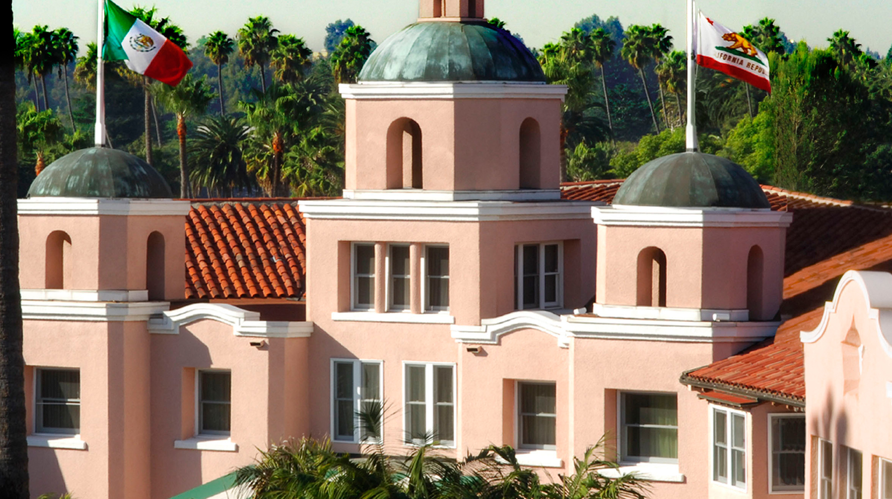
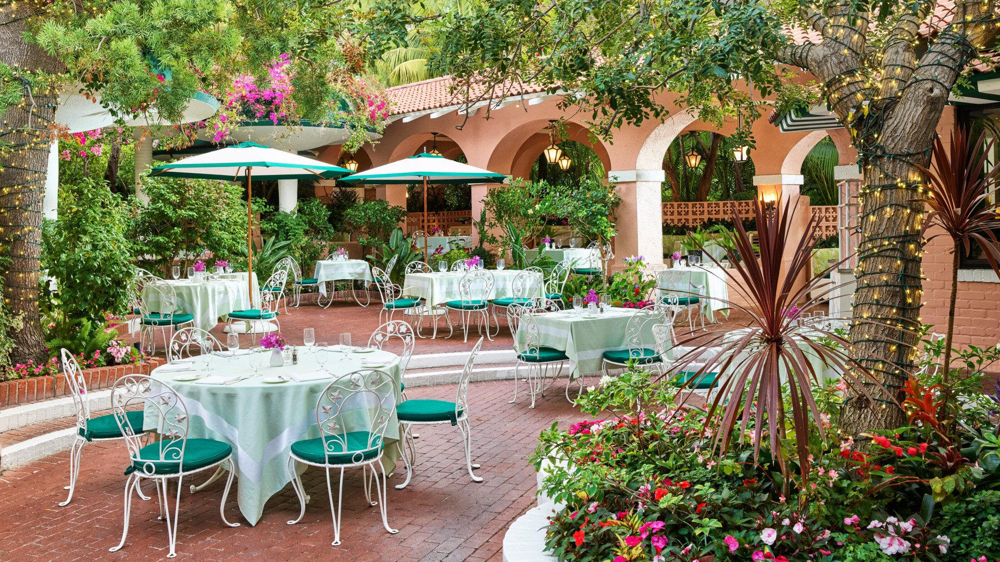
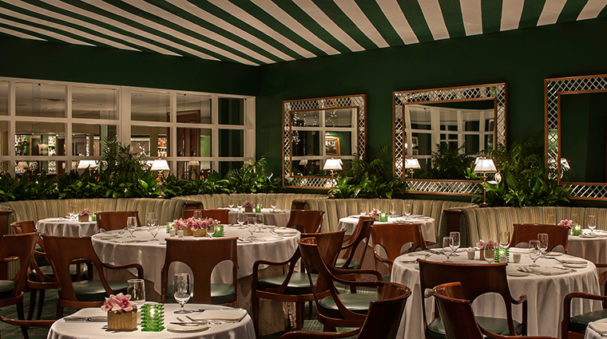

Beverly Hills Favorite
The Beverly Hills Hotel is the classic Hollywood choice, and honestly, it is my favorite Beverly Hills stay.
This is the Pink Palace. The Beverly Hills Hotel is not trying to be the newest or flashiest hotel in Los Angeles. Its power is that it feels like old Hollywood in the best way: palms, bungalows, green and pink, Polo Lounge energy, and a sense that the hotel has seen every era of Beverly Hills and still knows exactly who it is.
What makes it unique
Classic Hollywood is the product here. The hotel feels iconic before you even get to the room.
For the right client, this is not just a place to sleep. It is the Beverly Hills story. The bungalows are the most special way to do it, especially for privacy, longer stays, families, or anyone who wants that tucked-away residential feeling with the hotel still handling every detail.
Best For
Classic Hollywood
For clients who want Beverly Hills history, privacy, and a true sense of place.
Known For
Polo Lounge and bungalows
The Polo Lounge is a Los Angeles power room, while the bungalows are the signature stay.
Stay
Rooms, suites, and bungalows
Use the bungalows when privacy and the “only in Beverly Hills” feeling matter.
Client Type
Families, couples, Hollywood lovers
Great for high-end clients who want polished service without losing personality.



The overall setup
The hotel works because it gives you Beverly Hills glamour without making the stay feel cold. You can do the pool, lunch at The Polo Lounge, a bungalow stay, shopping in Beverly Hills, or a quieter trip where the hotel becomes the whole mood. It is polished, but it still has personality.
Rooms, suites, and bungalows
The regular rooms are strong, but the magic is in the suite and bungalow categories. For those guests, I would look at the larger suites or bungalows first because they give the stay privacy, indoor-outdoor space, and that classic Beverly Hills residential feel.
Dining and what to do
The Polo Lounge is the anchor: breakfast, lunch, dinner, power meetings, and old Hollywood atmosphere. The Fountain Coffee Room is more casual and iconic in its own way, while the Cabana Cafe keeps pool days easy. Add Beverly Hills shopping, a private studio-style day, restaurant reservations across West Hollywood and Beverly Hills, or a driver-led day through Malibu.
My honest take
This is the Beverly Hills hotel I would lead with when the client wants classic, Hollywood, and timeless. It is not the trendiest answer. That is exactly why it works.